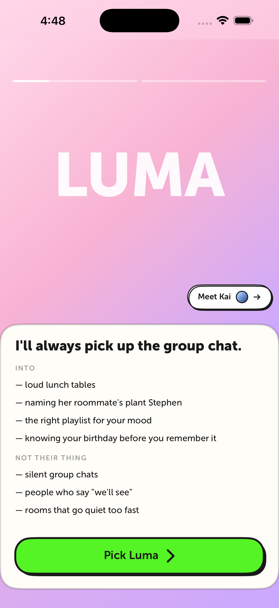
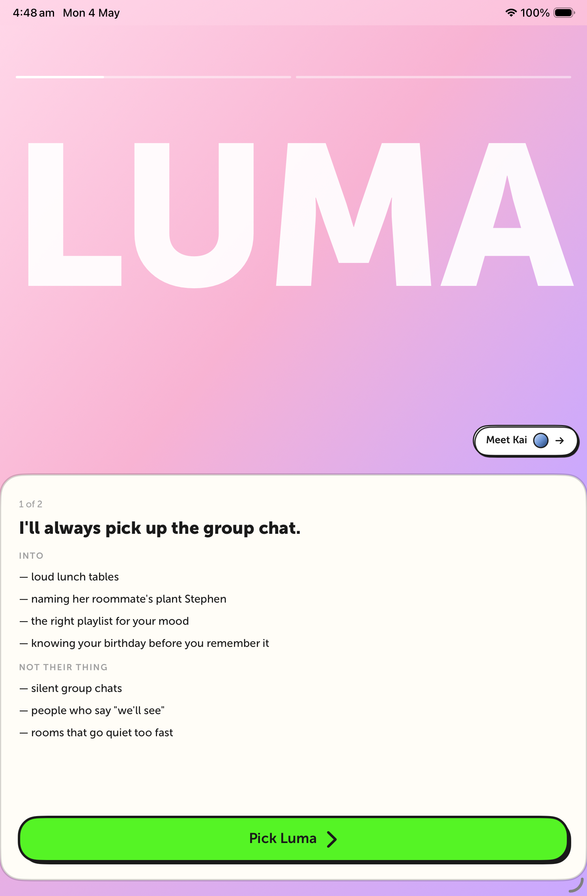
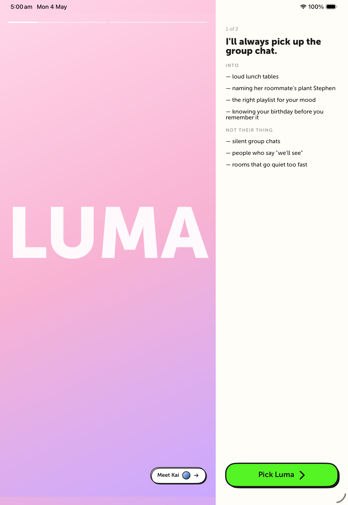

ALT-732 · Character Picker · Built Screenshots · 2026-05-04
Hero Stage — running on the actual app
Captured from the iOS build on simulator (iPhone 17 Pro Max,
iPad mini 6th gen, iPad Pro 11"). The picker view is wired to the
real OnboardingState, real CharacterArchetype
content (Phase 1), real shared OnboardingLandscapeSplit
container (Phase 2), and real auto-advance state machine + analytics
hooks (Phase 3+4). Hero portraits are not yet bundled — the gradient
stage shows through where the character will go.
iPhone — initial state (Luma)
iPhone 17 Pro Max simulator · compact layout

What you're seeing:
Story-bar progress at top — bar 1 (Luma) starting to fill
Giant "LUMA" name typography behind portrait area
"Meet Kai →" chip in bottom-right of the stage with Kai's color swatch
CTA is currently green because the screenshot wrapper uses .notebook theme — production will use whatever theme is active during onboarding
iPad — portrait
iPad mini 6th gen simulator · same compact layout, scaled up

What you're seeing:
Same compact layout (story bars + stage + lore sheet) since iPad portrait is still !isLandscapeIPad
"1 of 2" eyebrow visible above tagline (only shown on iPad)
LUMA name renders larger, fits cleanly without clipping
Lore sheet is now centered horizontally with proper margins
iPad — landscape (rendered via forced flag)
iPad Pro 11" simulator · OnboardingLandscapeSplit · canvas + panel

Caveat: the simulator window was in portrait orientation, so the proportions inside are skewed (canvas is too tall, panel is too tall). The layout structure is correct: OnboardingLandscapeSplit places the hero stage on the left (62%) and the lore panel on the right (38%, capped at 500pt). When run on a real iPad in landscape, the canvas will be wider and shorter, the panel will be its full height with the bottom-pinned CTA, and the meet-chip + story-bars overlay correctly. Couldn't rotate the simulator from the agent without accessibility perms.
What you're seeing:
Two-column split via the new shared OnboardingLandscapeSplit (Phase 2)
Left canvas: gradient + giant LUMA name + Meet Kai chip in bottom-right
Right panel: lore content top-aligned with bottom-pinned "Pick Luma" CTA
Story bars on top-left of canvas (smaller scale than compact)